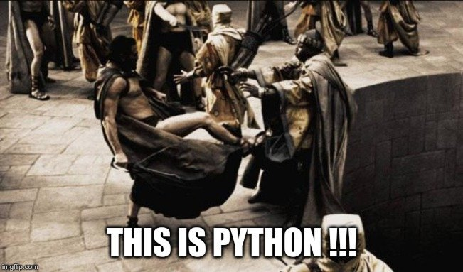

2020.01.09
Dekoratory w Pythonie
Wykorzystano zdjęcie autorstwa Yan Krukov z Pexels
Ostatnich kilka artykułów na tym blogu, było związane z ogólnikami dotyczącymi testów . Tym razem wpis typowo techniczny związany z moim ulubionym językiem programowania, czyli Pythonem. Język ten ma pewne magiczne metody i elementy niespotykane w innych językach (lub sposób ich użycia i implementacji jest dużo bardziej złożony). Jednym z takich elementów jest tzw. dekorator .
Czym jest dekorator? ¶
W skrócie dekorator to jeden ze strukturalnych wzorców projektowych. Pozwala on na dynamiczne dodanie nowej funkcji do istniejącej klasy podczas działania programu.
W Pythonie implementacja dekoratorów dla metod po raz pierwszy została dodana w wersji 2.4 języka, a dokument, który to opisywał to PEP 318 - Decorators for Functions and Methods ( PEP to skrót od Python Enhancement Proposals ). W Pythonie 3.0 wprowadzono natomiast możliwość tworzenia dekoratorów dla klas (opis w PEP 3129 - Class Decorators .
Zasada działania dekoratorów polega na opakowaniu (tzw. enkapsulacji ) oryginalnej klasy, nową klasą, tzw. klasą dekorującą .
Na czym polega opakowywanie? Najprościej porównać to do starej rosyjskiej zabawki, matrioszki .
Jeśli nie wiesz, czym jest ta zabawka, to polecam zapoznać się z poniższym filmikiem, bo zasada działania idealnie odzwierciedla mechanizm opakowywania (a jeśli znasz tą zabawkę, tzn. że zapewne jesteś co najmniej tak stary, jak ja).
Jak widać Matrioszka, to zabawka, w której mniejsze Matrioszki, umieszczane są w środku większej. Mniejsza Matrioszka jest wtedy enkapsulowana w większej. Ta mniejsza Matrioszka to nasza klasa dekorowana , a większa to klasa dekorująca . Tak jak i w przypadku Matrioszek, tak i dekoratorów może być więcej niż jeden. Jedyna różnica pomiędzy Matrioszką, a dekoratorem jest taka, że Matrioszka to w zasadzie taka sama lalka jak jej mniejsza wersja (różnią się głównie rozmiarem). Dekorator natomiast to zupełnie inna klasa, która dodaje nowe możliwości do już istniejącej klasy (Matrioszka tego nie potrafi).
Zauważ jedną, bardzo istotną rzecz: wszędzie powyżej wspominam, że dekorator jest klasą opakowującą inną klasę, a wspomniany PEP 318 mówi o dekorowaniu funkcji i metod. Czy przypadkiem nie ma tu gdzieś błędu?
Funkcja jest obiektem ¶
Zanim przejdziemy do sedna, to zapoznajmy się z definicją obiektu . Mocno streszczając, obiekt to struktura zawierająca dane i metody/funkcje służące do wykonania jakichś operacji na tych danych. Bardzo szybko zauważymy, że ten opis idealnie pasuje do klasy . Obiekt stworzony na podstawie definicji klasy jest instancją danej klasy.
Dlaczego więc, w Pythonie mówimy o dekorowaniu funkcji lub metod danej klasy (które też są funkcjami)? Otóż przyczyna jest bardzo prosta: funkcje w Pythonie są obiektami/klasami (nie zdziw się, bo od teraz będę używał tych nazw zamiennie). Jak każdy obiekt w Pythonie, tak i funkcja ma swój typ:
Ponieważ funkcja jest obiektem, możemy ją przechowywać w zmiennej:
Czyli daje nam to taki sam efekt, jak wtedy, gdy wywołujemy funkcję bezpośrednio:
Zauważ, że podczas przypisywania funkcji do zmiennej pominąłem nawiasy
()
. Pominięcie nawiasów powoduje, że do zmiennej
var
przypisany jest adres w pamięci, gdzie przechowywane jest kod funkcji. Dopiero wywołanie
var()
powoduje taki sam efekt jak bezpośrednie wywołanie funkcji
example_function()
.
Dodatkowo w ciele funkcji, można zdefiniować inną funkcję. Funkcja wewnętrzna nie będzie jednak mogła być wywołana spoza funkcji, w której jest umieszczona:
def external_function():
def internal_function():
print("Internal")
print("External")
internal_function()
external_function()
A co się stanie, jak spróbujemy wywołać funkcję wewnętrzną z zewnątrz?
Traceback (most recent call last):
File "/.../interactiveshell.py", line 3326, in run_code
exec(code_obj, self.user_global_ns, self.user_ns)
File "<ipython-input-17-6f1c04ea4501>", line 1, in <module>
internal_function()
NameError: name 'internal_function' is not defined
Widzimy, że interpreter Pythona nie zna definicji funkcji
internal_function
.
Skoro już wiemy, że funkcja jest obiektem, to ciekawe czy obiekt może być funkcją?
Czy obiekt może być funkcją? ¶
W Pythonie klasy posiadają pewne
metody magiczne
. Jedną z nich jest metoda
__call__
. W przypadku klasy funkcja ta umożliwia uruchomienie instancji klasy, tak jak by była funkcją:
class FuncClass():
def __init__(self):
self.var = []
def __call__(self, element):
self.var.append(element)
Powyżej widzisz klasę, która ma zaimplementowane 2 metody magiczne :
-
__init__, która definiuje zmiennąvarjako pustą listę i wywoływana jest podczas inicjalizacji instancji klasy ( uwaga , to nie jest konstruktor, choć wiele osób tą metodę tak określa), -
__call__, która przyjmuje jako argument wywołania dowolnyelementi dodanie go do listy w zmiennejvar.
Powyższa implementacja to nic skomplikowanego. Sprawdźmy zatem, jak zachowuje się taka klasa.
f = FuncClass() # Utworzenie instancji klasy
f.__call__(1) # Wywołujemy bezpośrednio metodę __call__ instancji f
print(f.var)
# Tym razem odnosimy się do instancji f z pominięciem metody __call__
# (zostanie ona automatycznie wywołana przez interpreter)
f("Drugi")
print(f.var)
Widać powyżej, że klasa, może zachowywać się jak funkcja. Każdy obiekt w języku Python może (nie musi) mieć zaimplementowaną metodę
__call__
. Skoro tak jest, to sprawdźmy, czy normalna funkcja też ją ma. Wróćmy więc do naszej bardzo prostej funkcji:
Wiemy już, że możemy ją wywołać poprzez
example_function()
co w wyniku spowoduje wyświetlenie napisu
Example
. A co z metodą
__call__
? Sprawdźmy:
Udowodniliśmy właśnie, że klasa może zachowywać się jak funkcja, oraz że funkcja jest obiektem. Co prawda obiekt ten jest w pewien sposób ograniczony (nie da się do niego np. dynamicznie dodać zmiennej lub odczytać zmiennych z ciała funkcji), ale jednak jest obiektem.
Wróćmy jednak do dekoratorów.
Pierwszy dekorator ¶
Na początku pisałem, że dekorator to klasa, która opakowuje inną klasę, dodając do opakowywanej klasy nową funkcjonalność. Skoro już wiemy, że funkcja jest klasą/obiektem to w Pythonie dekoratorem może być zarówno funkcja, jak i klasa. Aby sobie nie utrudniać na początku, zacznijmy od implementacji dekoratora w postaci funkcji. Jednak, aby móc zaimplementować dekorator, musimy mieć co udekorować. Rozpatrzmy zatem taką prostą funkcję:
Powyższa funkcja ma za zadanie dodać do siebie 2 elementy. Sprawdźmy więc, jak działa:
Wszystko super. Wynik taki jak się spodziewaliśmy. Sprawdźmy zatem inny zestaw argumentów:
Co? Jak to możliwe, że dostaliśmy
12
? Zauważ, że jako argumenty podaliśmy tekst z cyframi 1 i 2, a nie liczby 1 i 2. Interpreter Pythona uznał, że zamiast dodawania dwóch liczb, chcemy połączyć dwa ciągi znaków w jeden dłuższy ciąg znaków. Jak naprawić taki, kod nie zmieniając ciała funkcji
add
?
Wykorzystamy w tym celu dekorator. Zacznijmy jednak od kilku rzeczy, które pomogą nam zrozumieć jak w swoim wnętrzu działa taki dekorator. Sprawdźmy, jak działa poniższy kod:
def decorator(func):
print(f"Decorated function name: {func.__name__}")
return func
def add(first, second):
print(first + second)
add = decorator(add)
add(1, 2)
Implementacji funkcja
decorator
jako argument przyjmuje ciało innej funkcji. Ma za zadanie wyświetlić jej nazwę oraz po prostu ją zwrócić.
Następnie wykorzystana została właściwość, o której pisałem powyżej, czyli możliwości przypisania funkcji do zmiennej (w tym przypadku funkcję
add
przypisujemy do zmiennej o tej samej nazwie, czyli również
add
). Takie przypisanie powoduje, że zmienna
add
staje się funkcją, która w pierwszej kolejności wywoła dekorator, którego argumentem będzie rzeczywista funkcja
add
.
Niestety taki zapis jest mało czytelny i nie do końca widać (patrząc tylko na definicję funkcji
add
), że została ona udekorowana. W Pythonie na szczęście istnieje na to prosty sposób:
Implementację funkcji
decorator
pozostawiłem bez zmian, natomiast funkcja
add
została udekorowaną. Służy do tego zapis
@decorator
tuż powyżej jej definicji.
Na końcu funkcja
add
została wywołana z dwoma argumentami w taki sam sposób jak wcześniej.
W obu przypadkach wynikiem działania jest wyświetlenie nazwy funkcji część, za którąą odpowiedzialny jest dekorator) oraz wynik dodawania dwóch liczb (za to odpowiedzialna jest funkcja
add
, która nie została w żaden sposób zmodyfikowana).
Notacji z wykorzystaniem
@decorator
, jest tzw.
syntactic sugar
dla poprzedniego zapisu
add = decorator(add)
.
Jeśli używasz już Pythona od pewnego czasu, to powyższy zapis nie powinien być dla Ciebie zupełnie obcy. Zapewne spotkałeś się z nim już nie raz, podczas tworzenia swoich własnych klas, gdzie często wykorzystywane są m.in. następujące dekoratory:
-
@classmethod -
@staticmethod -
@property
args i kwargs ¶
Wiemy już, jak stworzyć prosty (jeszcze nic nierobiący) dekorator. Skoro do środka dekoratora przekazujemy funkcję, to gdzieś powinny być jeszcze widoczne wszystkie argumenty, które do danej funkcji są przekazywane w momencie jej wywołania. Rozważmy poniższą definicję dekoratora (implementację funkcji
add
pominę, gdyż założyliśmy na początku, że jej nie zmieniamy):
def decorator(func):
def wrapper(*args, **kwargs):
print(f"args (type: {type(args)}): {args}")
print(f"kwargs (type: {type(kwargs)}): {kwargs}")
return wrapper
Do definicji wewnętrznej funkcji
wrapper
dodałem dwa atrybuty:
-
*args -
**kwargs
Zobaczmy teraz, co się stanie, jak wywołamy poniższy kod:
Widzimy, że argumenty przekazane do funkcji tworzą zmienną
args
o typie
touple
(
krotka
), natomiast zmienną
kwargs
jest typu
dict
(
słownik
), ale jest to pusty słownik.
Co się stanie, jak wywołamy funkcję
add
w inny sposób:
Widzimy teraz, że
args
jest puste, natomiast
kwargs
zostało wypełnione.
Możemy wywołać funkcję
add
również jako miks powyższych wywołań:
Teraz zarówno
args
jak i
kwargs
zostały wypełnione.
Domyślasz się już zapewne czym są
args
i
kwargs
, ale dla ścisłości odpowiedzmy sobie na pytanie:
-
*args- nienazwane argumenty przekazywane do funkcji przyjmujące postać krotki ze względu na zachowanie kolejności argumentów, -
**kwargs- nazwane argumenty przekazywane do funkcji przyjmujące postać słownika ze względu na powiązanie nazwy argumentu ( key ), z jej wartością ( value ).
Możliwość przekazania argumentów do funkcji przy użyciu
args
i
kwargs
niesie za sobą pewne implikacje. Najważniejszą implikacją jest konieczność obsłużenia obu przypadków w ciele dekoratora, jeśli chcemy wykonać jakieś operacje na atrybutach przekazywanych do dekorowanej funkcji.
Wróćmy teraz do napisania dekoratora, który ma za zadanie sprawdzić typ argumentów przekazywanych do funkcji
add
tak, aby przeprowadziła działanie dodawania dwóch liczb.
Przyjmijmy najprostsze założenie, że aby funkcja zadziałała poprawnie, argumenty funkcji muszą być typu int lub float . W przypadku, jeśli dowolny z argumentów będzie innym typem, funkcja nie zostanie uruchomiona i zostanie zwrócony wyjątek typu TypeErrror .
def decorator(func):
def wrapper(*args, **kwargs):
# Zmienna określająca czy typy argumentów są poprawne
is_correct = True
# Utworzenie kopi listy argumentów
arguments = list(args)
# Rozszerzenie listy argumentów
arguments.extend(kwargs.values())
for arg in arguments:
# Poniższe wyrażenia zawiera w sobie dwie ciekawe
# konstrukcje:
# 1. tzw. short if sprawdzający czy podany argument jest
# typu int lub float i zwracający odpowiednią wartość
# 2. operator mnożenia z przypisaniem *= powoduje, że gdy
# choć jeden z atrybutów nie będzie odpowiedniego typy
# to zmienna is_correct przybierze wartość False
is_correct *= True if \
any(isinstance(arg, t) for t in [int, float]) else False
if is_correct:
# Przekazanie argumentów do dekorowanej funkcji,
# która zostaje wywołana, a jej wynik zwrócony
return func(*args, **kwargs)
else:
# Zwrócenie wyjątku, gdy choć jeden atrybut przekazany do
# funkcji nie jest typu int lub float
raise TypeError("One of the arguments is not int or float")
return wrapper
@decorator
def add(first, second):
print(first + second)
Mam nadzieję, że powyższy kod jest dla Ciebie zrozumiały (umieściłem odpowiednie komentarze w samym kodzie, aby lepiej wyjaśnić, co on robi).
Jeśli jednak masz problem ze zrozumieniem zapisu
is_correct *= True if any(isinstance(arg, t) for t in [int, float]) else False
poniżej umieszczam jego ekwiwalent:
is_correct_helper = False
for t in [int, float]:
if isinstance(arg, t):
is_correct_helper = True
is_correct *= is_correct_helper
Zauważ jednak, że ten kawałek kodu wymaga wprowadzenia dodatkowej zmiennej pomocniczej
is_correct_helper
i nie jest tak zwięzły , jakwcześniejszy zapis, a którego będę używał w późniejszych przykładach. Sprawdźmy teraz, czy powyższy kod działa poprawnie dla argumentów o poprawnych typach:
Wynik jest poprawny. A co jeśli jeden z argumentów będzie ciągiem znaków?
Traceback (most recent call last):
File "/.../interactiveshell.py", line 3326, in run_code
exec(code_obj, self.user_global_ns, self.user_ns)
File "<ipython-input-2-fc0327af835d>", line 20, in <module>
add(1, "2.0")
File "<ipython-input-2-fc0327af835d>", line 13, in wrapper
raise TypeError("One of the arguments is not int or float")
TypeError: One of the arguments is not int or float
Zgodnie z podejrzeniem wynikiem działania jest wyjątek typu TypeError , a więc taki jaki zakładaliśmy.
Widzimy więc, że nasz dekorator działa tak, jak tego oczekiwaliśmy, a nasza funkcja dekorowana (
add
) nie została zmodyfikowana.
wraps ¶
Rozważmy teraz inną kwestię, tzn. dokumentację do naszego kodu. Do tej pory w naszym kodzie, nie ma ani jednej linijki opisującej czym nasza dekorowana funkcja się zajmuje. Dodajmy najprostszą możliwą formę dokumentacji, czyli pojedynczą linię komentarza pod definicją funkcji (zauważ, że pominąłem dodanie dekoratora):
Spróbujmy teraz wywołać jedną z metod, która wykorzystywana jest przez narzędzia do budowania dokumentacji kodu, np. Sphinx .
Widzimy, że poprzez wywołanie jednej z metod magicznych możemy dostać się do naszego opisu funkcji. Sprawdźmy teraz, co się stanie, jak udekorujemy funkcję naszym dekoratorem:
@decorator
def add(first, second):
"""Add to elements and print the result"""
print(first + second)
print(add.__doc__)
Dekorator wszystko nam popsuł |disappointed|.
Dlaczego tak się dzieje? Otóż
add.__doc__
pobiera teraz opis nie z funkcji
add
, a z dekoratora.
Możemy to rozwiązać bardzo łopatologicznie, ale ponieważ ktoś już o tym pomyślał, to wykorzystamy gotową funkcję. Wchodzi ona w skład bibliotek standardowych i jest częścią pakietu
functools
. Zaimportujmy zatem funkcję
wraps
i jej użyjmy (funkcja
add
pozostaje bez zmian).
from functools import wraps
def decorator(func):
@wraps
def wrapper(*args, **kwargs):
is_correct = True
arguments = list(args)
arguments.extend(kwargs.values())
for arg in arguments:
is_correct *= True if \
any(isinstance(arg, t) for t in [int, float]) else False
if is_correct:
return func(*args, **kwargs)
else:
raise TypeError("One of the arguments is not int or float")
return wrapper
print(add.__doc__)
Zauważ, że funkcja ta została wykorzystana do udekorowania funkcji wewnętrznej naszego dekoratora i że dokumentacja została poprawnie wyświetlona. Funkcja ta poprawia wyświetlanie również innych wartości, które nadpisywane są przez użycie dekoratora, ale po więcej szczegółów odsyłam do dokumentacji .
Dekorator z parametrami ¶
A co gdybyśmy chcieli np. wymusić, aby dekorator (poza już istniejącą implementacją) sprawdzał, czy oba parametry były tego samego typu? Musielibyśmy być w stanie przekazać do dekoratora jakieś dodatkowy parametr. Skoro wiemy, że dekorator jest funkcją, to być może dałoby się do takiego dekoratora przekazać ten parametr jako argument funkcji? Sprawdźmy więc.
def decorator(args_type_list=None): # Dekorator z argumentem
def inner_decorator(func): # Wcześniejszy dekorator
def wrapper(*args, **kwargs):
is_correct = True
arguments = list(args)
arguments.extend(kwargs.values())
# Zmienna pomocnicza użyta podczas sprawdzania typów,
# która przyjmuje przyjmuje listę typów przekazaną do
# dekoratora lub domyślną listę typów
types_list = args_type_list if \
isinstance(args_type_list, list) else [int, float]
for arg in arguments:
# Lista typów zamieniona na zmienną pomocniczą
is_correct *= True if \
any(isinstance(arg, t) for t in types_list) \
else False
if is_correct:
return func(*args, **kwargs)
else:
# Drobna modyfikacja
raise TypeError(f"One of the arguments is not one type of: "
f"{types_list}")
return wrapper
return inner_decorator
Wprowadziliśmy tutaj dodatkowy poziom zagnieżdżenia się oraz dokonaliśmy drobnej modyfikacji podczas sprawdzenia typów (wszystkie zmiany opatrzone zostały komentarzem w kodzie).
Sprawdźmy teraz jak udekorować naszą funkcję i jakie wyniki zostaną wyświetlone, jak spróbujemy jej użyć.
@decorator([int]) # Wywołanie dekoratora z parametrem
def add(first, second):
"""Add to elements and print the result"""
print(first + second)
add(1, 2)
Nic wielkiego, wszystko jest ok. A jak zmienimy typ jednego z argumentów wywołania funkcji
add
?
Traceback (most recent call last):
File "/.../interactiveshell.py", line 3326, in run_code
exec(code_obj, self.user_global_ns, self.user_ns)
File "<ipython-input-2-7a51c39f1784>", line 38, in <module>
add(1, 2.0)
File "<ipython-input-2-7a51c39f1784>", line 21, in wrapper
raise TypeError(f"One of the arguments is not one type of: "
TypeError: One of the arguments is not one type of: [<class 'int'>]
Super. Wynik spodziewany, ponieważ jeden z argumentów jest typu float .
Niestety, jeśli spróbujemy teraz użyć dekoratora bez parametrów, czyli zamiast zapisu
decorator(...)
użyjemy
decorator
tak jak wcześniej, otrzymamy następujący komunikat o błędzie:
Traceback (most recent call last):
File "/.../interactiveshell.py", line 3326, in run_code
exec(code_obj, self.user_global_ns, self.user_ns)
File "<ipython-input-3-50502c662126>", line 38, in <module>
add(1, 2.0)
TypeError: inner_decorator() takes 1 positional argument but 2 were given
Czy możemy sobie z tym problemem jakoś poradzić?

Oczywiście. Co ciekawe, taka modyfikacja wcale nie jest taka trudna do zrobienia. Wystarczy zmienić jedną linijkę kodu w dekoratorze.
Przeprowadźmy więc wymaganą modyfikację oraz sprawdźmy stary zapis dekoratora wraz z wywołaniem udekorowanej funkcji:
We własnym zakresie sprawdź jeszcze, czy przekazanie argumentów do dekoratora również działa |wink|.
Dlaczego w ogóle taka modyfikacja była potrzebna? Zauważ, czym różnią się oba zapisy dekoratora:
-
decorator- przekazanie adresu pamięci do funkcji (pisałem o tym wcześniej) -
decorator(...)- wywołanie funkcji z parametrami
Powyższe zapisy powoduję, że do zmiennej
args_type_list
przypisane są zupełnie inne wartości:
-
args_type_listjest adresem dekorowanej funkcji (w naszym przypadku będzie toadd, -
args_type_listjest argumentem przekazanym do dekoratora (w naszym przypadku będzie to lista typów do przeprowadzenia weryfikacji).
Dlatego też musimy sprawdzić, czy przekazywany argument jest funkcją, czy nie. Do tego służy funkcja
callable()
.
A może dałoby się to ciut prościej zrobić? Poza tym co z kwestią dokumentacji itp.
partial ¶
Po raz kolejny z pomocą przychodzi nam biblioteka
functools
. Tym razem jednak skorzystamy jednocześnie z poznanej wcześniej funkcji
wraps
oraz nowej
partial
. Spójrzmy na poniższy kod (ponownie dekorowana funkcja
add
pozostaje bez zmian).
from functools import wraps, partial
def decorator(func=None, args_type_list=None):
# Poniższy if sprawdza czy argument func jest wywołaniem funkcji
# czy zwykłym argumentem (rozwinięcie tego tematu w tekście poniżej)
if not callable(func):
return partial(decorator,
args_type_list=args_type_list if func is None else func)
# Implementacja funkcji 'wrapper' pozostaje bez zmian
@wraps(func)
def wrapper(*args, **kwargs):
is_correct = True
arguments = list(args)
arguments.extend(kwargs.values())
types_list = args_type_list if \
isinstance(args_type_list, list) else [int, float]
for arg in arguments:
is_correct *= True if \
any(isinstance(arg, t) for t in types_list) \
else False
if is_correct:
return func(*args, **kwargs)
else:
raise TypeError(f"One of the arguments is not one type of: "
f"{types_list}")
return wrapper
Zauważ, że przy użyciu funkcji
partial
kod uległ uproszczeniu, a funkcjonalność pozostała bez zmian. Dodatkowo dzięki wykorzystaniu dekoratora
wraps
działa dokumentacja, itp.
Uzupełnijmy jeszcze jak działa funkcja
partial
. Jest to funkcja, która jeśli zostanie wywołana, zachowuje się jak funkcja, która została jej przekazana jako argument wywołania. Dodatkowo należy zwrócić uwagę na to, jakie parametry jej przekazujemy. Zwróć uwagę, że
args_type_list
może przyjąć jedną z 2 wartości:
-
func- przekazujemy, jeśli wywołamy pusty dekorator (@dekorator) lub z parametrami jako args (@dekorator([int])), -
args_type_list- przekazujemy, jeśli wywołamy dekorator z parametrami jako kwargs (@dekorator(args_type_list=[int])).
Działanie funkcji
partial
jest bardzo zbliżone do działania dekoratora
@wraps
. Co ciekawsze, to dekorator ten jest w zasadzie inną formą wywołania funkcji
partial
(w ramach ćwiczenia polecam przejrzeć we własnym zakresie jak wygląda implementacja funkcji
wraps
).
Klasa jako dekorator ¶
Skoro wcześniej udowodniliśmy, że funkcja jest obiektem oraz że dekorator to funkcja, to może dałoby się zmusić obiekt, aby stał się dekoratorem?
Jak już wcześniej ustaliliśmy THIS IS PYTHON !!! więc odpowiedź powinna być oczywista |wink|.
Wcześniej pisałem, że jeśli w klasie zaimplementujemy funkcję
__call__
to obiekt, będzie zachowywał się jak funkcja, a więc możemy wykorzystać ten fakt do stworzenia dekoratora. Sprawdźmy jak wwyglądałby nasz dekorator, gdybyśmy zaimplementowali go przy użyciu klasy.
from functools import update_wrapper
class decorator(object):
def __init__(self, func=None):
if callable(func):
self._init(func=func)
else:
self._type_list = func
def __call__(self, *args, **kwargs):
if callable(args[0]):
self._init(func=args[0])
return self
is_correct = True
arguments = list(args)
arguments.extend(kwargs.values())
for arg in arguments:
is_correct *= True if \
any(isinstance(arg, t) for t in self._type_list) \
else False
if is_correct:
return self._func(*args, **kwargs)
else:
raise TypeError(f"One of the arguments is not one type of: "
f"{self._type_list}")
def _init(self, func):
"""Fill some internal variables and update wrapper so it will
return decorated function properties (like __doc__, etc.)"""
self._func = func
self._type_list = [int, float]
update_wrapper(self, self._func)
Powyższy kod jest odpowiednikiem dekoratora opisanego we wcześniejszym punkcie. Na pierwszy rzut oka, taka implementacja wydaje się dużo bardziej zagmatwana, ale umożliwia ona zastosowanie kilku innych ciekawych mechanizmów. Przykładem może być zastosowanie wzorca projektowego podobnego do Singletona (choć popularnie określany jest jako antywzorzec), czyli tzw. Borg (to materiał na oddzielny wpis, który już wkrótce będzie dostępny na tym blogu), a więc może działać jak cache lub mieć inne ciekawe właściwości.
Analizę powyższego kodu oraz sprawdzenie poprawności jego działania zostawię w Twojej gestii.
Podsumowanie ¶
Jak więc widzisz, dekoratory to bardzo ciekawa konstrukcja w Pythonie. Umożliwiają bardzo dużo i pomimo, że powyższe przykłady były stosunkowo proste, to miały za zadanie umożliwić Ci zrozumienie mechanizmów ich działania, a nie powodować ataku paniki. Mam nadzieję, że udało mi się choć trochę je odczarować oraz, że zaczniesz ich używać podczas pisania swojego kodu.
Backlinks:
- args i kwargs - w jaki sposób przekazywane są wartości argumentów do funkcji.
- _ call_ - jak sprawić, aby klasa zachowywała się jak funkcja.
- partial - wywołanie funkcji przekazanej jako argument,
- wraps - biblioteka wspomagająca tworzenie dekoratorów,
Najmniejszy framework do testów w Pythonie
Jeśli czytałeś mój artykuł dotyczący
dekoratorów w Pythonie
, to wspominam w nim o dwóch sposobach przekazywania argumentów do funkcji: przez 2020-dekoratory-w-pythonie.md(jeśli nie wiesz, o co chodzi, to zanim przejdziesz dalej, polecam się z tym zapoznać). W naszym kodzie przekazanie argumentów do metody
requests.request
wykonaliśmy właśnie przy użyciu
kwargs
, a więc de facto jako słownik, gdzie kluczem jest nazwa argumentu, a wartością danego klucza, wartość argumentu. Mówię o tym kawałku kodu:
Jeśli czytałeś mój artykuł dotyczący 2020-dekoratory-w-pythonie.md, to wspominam w nim o dwóch sposobach przekazywania argumentów do funkcji: przez
args i kwargs
(jeśli nie wiesz, o co chodzi, to zanim przejdziesz dalej, polecam się z tym zapoznać). W naszym kodzie przekazanie argumentów do metody
requests.request
wykonaliśmy właśnie przy użyciu
kwargs
, a więc de facto jako słownik, gdzie kluczem jest nazwa argumentu, a wartością danego klucza, wartość argumentu. Mówię o tym kawałku kodu:
3. Następnie wywołujemy metodę https://docs.python.org/3/library/functions.html#setattr , która jest metodą wbudowaną w język Python. Pozwala ona na wstawienie do obiektu, nowego atrybutu oraz przypisania mu wartości (o tym również wspominałem w artykule dotyczącym dekoratorów w sekcji funkcja jest obiektem . Zauważ, że jej wywołanie przyjęło 3 argumenty:
Jeszcze mniejszy framework do testów w Pythonie
2. Wyrażenie to przypisujemy do zmiennej
add
. W tym momencie zmienna
add
staje się funkcją, której ciałem jest wyrażenie Lambda (opisywałem ten mechanizm we wpisie dotyczącym
dekoratorów
, gdzie tłumaczyłem, że 2020-dekoratory-w-pythonie.md.
2. Wyrażenie to przypisujemy do zmiennej
add
. W tym momencie zmienna
add
staje się funkcją, której ciałem jest wyrażenie Lambda (opisywałem ten mechanizm we wpisie dotyczącym 2020-dekoratory-w-pythonie.md, gdzie tłumaczyłem, że
funkcja jest obiektem
.

Jak zacząć automatyzować testy?
Poznaj 12 pytań, które pomogą Ci rozpocząć proces automatyzacji testów. W zupełnym oderwaniu od języka programowania, frameworków do testów oraz technologi w jakiej napisana została aplikacja, którą będziesz testować. Całość opisana prostym i zrozumiałym językiem.
Pobieram darmowy poradnik